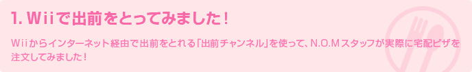
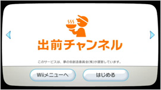
「ちょうどゲームがいいところなのに、おなかが空いちゃった。でも、ごはんを準備するのが面倒だなあ」なんて思ったことはありませんか？
「出前チャンネル」は、そんなときに持ってこいのサービスです！
「出前チャンネル」は、Wiiメニューの「Wiiショッピングチャンネル」から無料でダウンロードできます。
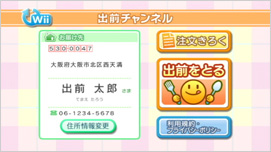
Wiiメニューに追加してチャンネルを開いたら、お届け先になる自宅の住所や電話番号を登録します。
メインメニューが表示されたら、住所を確認して、さっそく「出前をとる」を選択してみましょう！
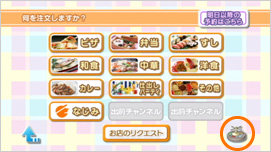
「ピザ」や「すし」など、食事のジャンルごとに表示されている中から、食べたいものを選びます。今回は、みんなでワイワイ食べられるピザを頼んでみましょう。
どれにしようかなかなか決められないときは、「まよいのルーレット」でランダムに選択することもできます。
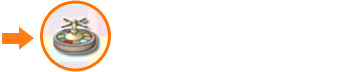
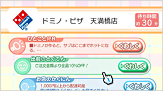
近所の宅配ピザのお店が自動で検索され、一覧で表示されました。「出前チャンネル」なら、自分で近所のお店を探す必要も、お店のチラシをとっておく必要もありません！
お店のキャンペーン情報や、お届けまでの目安となる「待ち時間」も表示されるので、これらを参考にして好きなお店を選びましょう。
各お店には、「出前チャンネル」ならではの「とくてん」もあります！
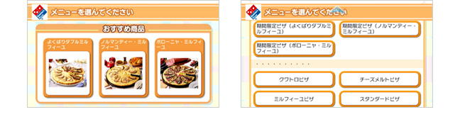
「出前チャンネル」には、つねにそのお店の情報が表示されていて、期間限定・お店限定のスペシャルメニューがある場合もあります。もちろん、お好みでピザの生地を変更したり、トッピングを追加したりすることもできます。
食べたいピザがいくつかあって迷ってしまったら、メニューの価格ボタンの外側を押してみましょう。メニューにハートマークが追加され、ハートのついたメニューだけを一覧表示して、あとからじっくり選べます。
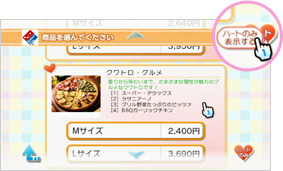
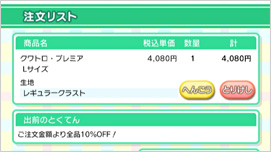
「注文リスト」に移動して「これでOK」ボタンを押せば、注文は完了です。
あまりにカンタンなので、頼みすぎないよう要注意！？
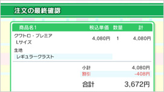
注文後すぐ「Wii伝言板」に確認メールが届きます。あとはピザが届くのを待つばかり。
途中だったゲームを再開して待っていれば、あっという間です！
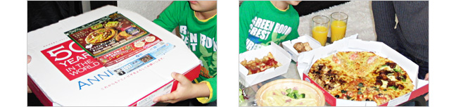
※写真はイメージです。
実際に「出前チャンネル」で注文してみると、近所のお店を探す必要も、お店に電話を入れる必要もないのがいかに便利か実感できます。また、家族やお友だちとテレビに映ったメニューの画面を見て楽しみながら注文できるのもうれしいところです。
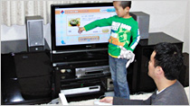
ちなみに、2回目の注文時からは住所などの登録作業は不要で、さらにカンタンに注文できるようになります。また、メインメニュー「注文きろく」や食事ジャンルメニューの「なじみ」から、よく出前を注文しているお店をワンタッチで選ぶこともできます。
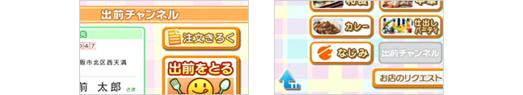
さらに、翌日以降の出前を予約したり、お届け希望時間を選んだりすることも可能です。ホームパーティを開く前の日などに、あらかじめ注文しておくのもいいでしょう。
このように便利で楽しい「出前チャンネル」を、みなさんもぜひ実際に体験してみてください！
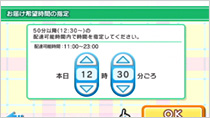
｜ 前のページへ ｜ トップへもどる ｜ 次のページへ ｜